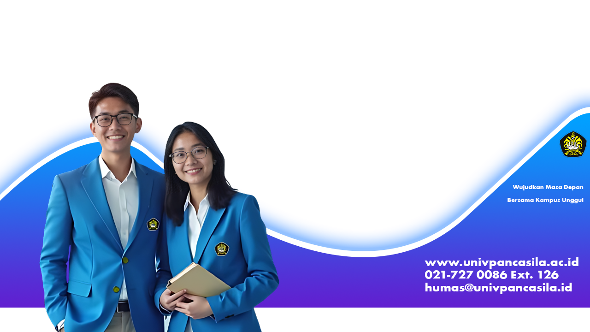
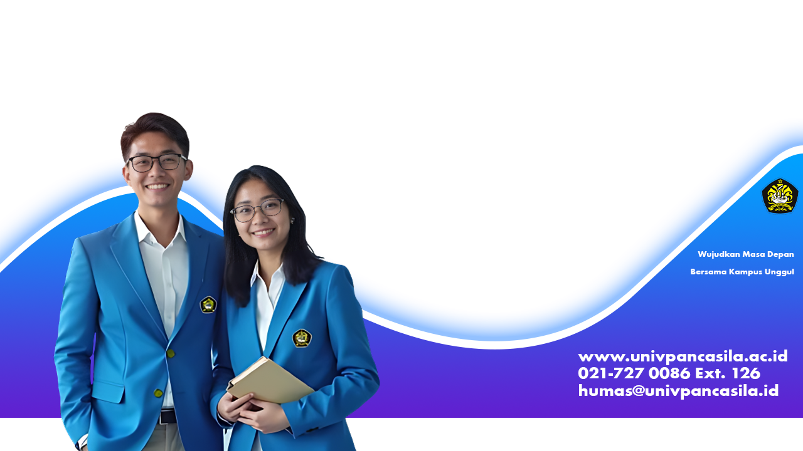

Green Metric
Universitas Pancasila meraih peringkat ke-28 berdasarkan UI GreenMetric World University Rankings Tahun 2024, sebagai bentuk komitmen dalam penerapan prinsip keberlanjutan dan pengelolaan lingkungan kampus yang berwawasan hijau.


Kampus modern dengan fokus pendidikan, riset, dan inovasi untuk masa depan bangsa.
Universitas Pancasila meraih peringkat ke-28 berdasarkan UI GreenMetric World University Rankings Tahun 2024, sebagai bentuk komitmen dalam penerapan prinsip keberlanjutan dan pengelolaan lingkungan kampus yang berwawasan hijau.

Mendapatkan Sertifikat ISO 21001:2018 tentang Sistem Manajemen Organisasi Pendidikan Tinggi

Universitas Pancasila meraih Peringkat Dunia 2.987 versi Webometrics, dengan kontribusi kuat pada Impact Rank 4.653, Openness Rank 2.457, dan Excellence Rank 6.997. Capaian ini menegaskan komitmen Universitas Pancasila dalam penguatan kualitas akademik dan visibilitas global.

Universitas Pancasila adalah kampus yang memiliki reputasi tinggi dalam kualitas pendidikan, akreditasi unggul, dan pengakuan nasional serta internasional. Lingkungan akademik inovatif dan fasilitas modern menjadikan UP pilihan tepat bagi mahasiswa untuk menghadapi tantangan global.
 

Temukan berbagai fasilitas modern, ruang pembelajaran, serta lingkungan nyaman yang mendukung proses akademik dan pengembangan diri mahasiswa.

Ribuan warga tumpah ruah di Kampung Lembur Sawah, Kelurahan Mulyaharja, Kota Bogor dalam rangka helaran budaya Sidekah Bumi, sebuah tradisi luhur yang telah diwariskan secara turun-temurun sejak abad ke-17.

Universitas Pancasila (UP) dengan bangga menjadi tuan rumah pelaksanaan Rapat Kerja Pengabdian Masyarakat (Pengmas) UI GreenMetric World University Rankings Network - Indonesia, yang diselenggarakan secara daring pada 22 Mei 2025.

Universitas Pancasila melalui Lembaga Penelitian dan Pengabdian kepada Masyarakat (LPPM) resmi melaksanakan kegiatan Penandatanganan Kontrak Turunan Program Penelitian dan Pengabdian kepada Masyarakat Hibah DPPM Tahun 2025.